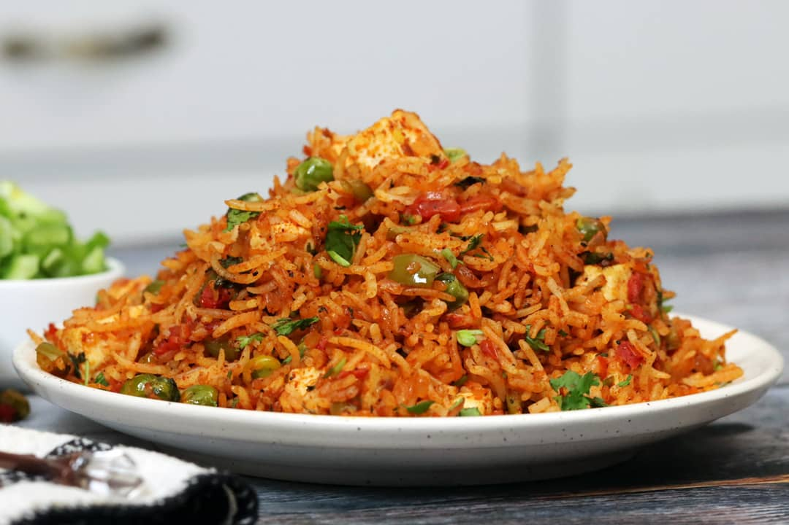

PULAV

Called by various names such as pilaf or pulav, Vegetable Pulao is one of the most common rice dishes in India, the other being Veg Biryani.
A Veg Pulao is basically an easy rice based dish made with spices, herbs and vegetables in a pot. Additionally there are non-vegetarian versions of pulao too.
You will find many different vegetarian pulao recipes on the blog including Peas Pulao, Kashmiri Pulao, Tawa Pulao, Paneer Pulao and more.
However the recipe I’m sharing now is my absolute favorite and how I almost always end up making it.
What I like best about making this veg pulao recipe, is that it comes together quickly. Use a food processor for chopping the veggies and it will come together super quickly.
In fact, you only need about 15 minutes of prep time and 25 minutes of cook time to get this cozy dinner on the table!
Ingridents:
- Spices
- Ginger garlic paste
- Herbs
- Herbs
- Rice
- Mixed Vegetables
Steps:
- Wash rice and soak it in water for 15-20 minutes. Drain and keep aside until needed.
- Heat ghee and oil together in a pressure cooker (2-liter capacity, stainless steel cooker) on low flame. Add bay leaf, cinnamon, clove, and sauté for 30 seconds. Add onion and sauté until it turns light brown or for approx. 2 minutes.
- Add chopped tomato, green peas, french beans and carrot.
- Stir-fry them for approx. 2 minutes.
- Add soaked (drained) rice, garam masala powder, turmeric powder, red chilli powder and salt.
- Stir-fry them for approx. 2 minutes.
- Add 1 cup water and mix well.
- Close the lid and cook over medium flame for 2 whistles. When 1st whistle is completed, reduce the flame to low and cook until another whistle. Turn off flame.
- Let it cool at room temperature until pressure inside cooker comes down naturally. Open the lid carefully and fluff the rice with a fork. Transfer it to a serving bowl and garnish with fresh coriander leaves.
Home